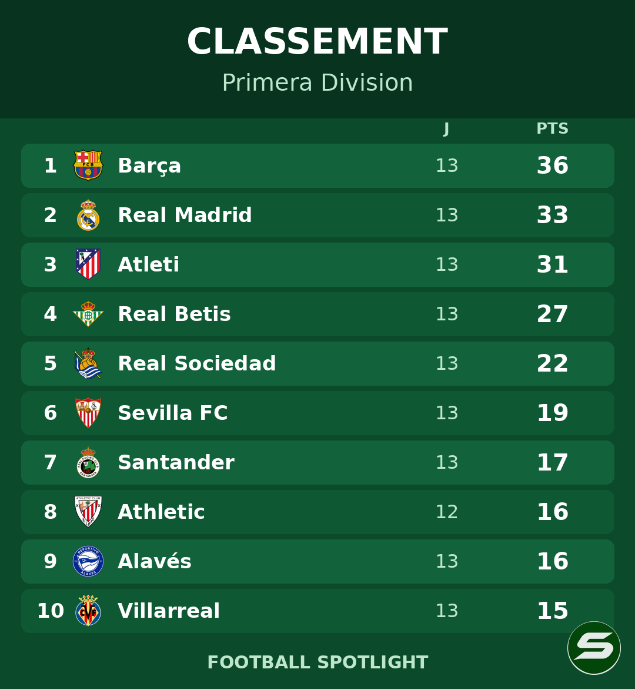
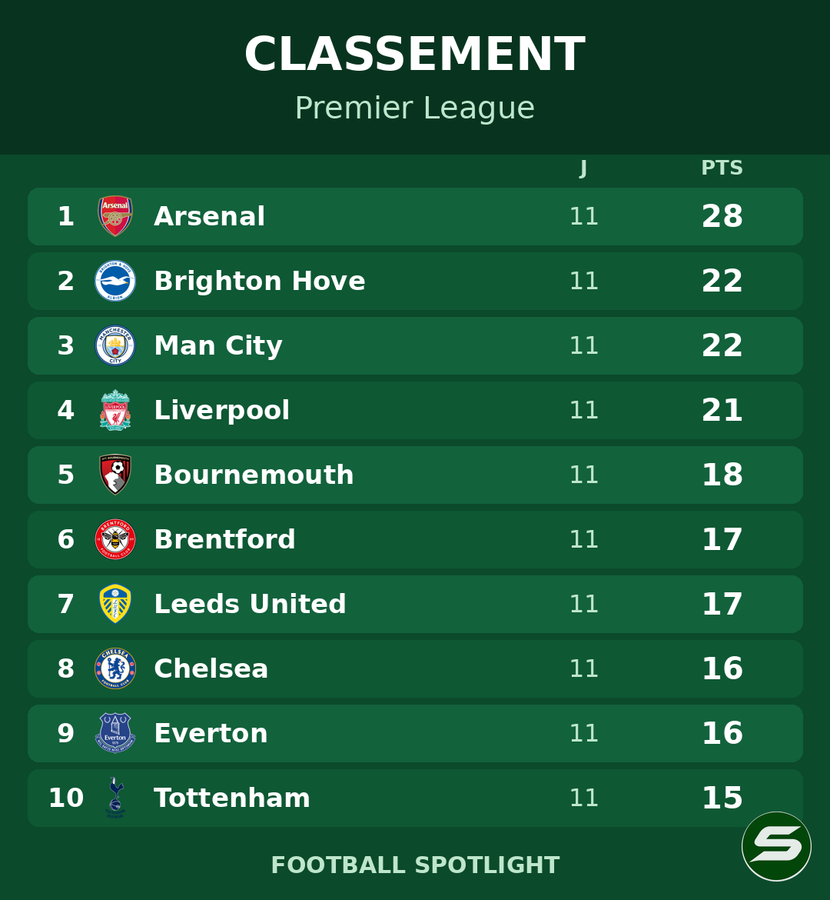
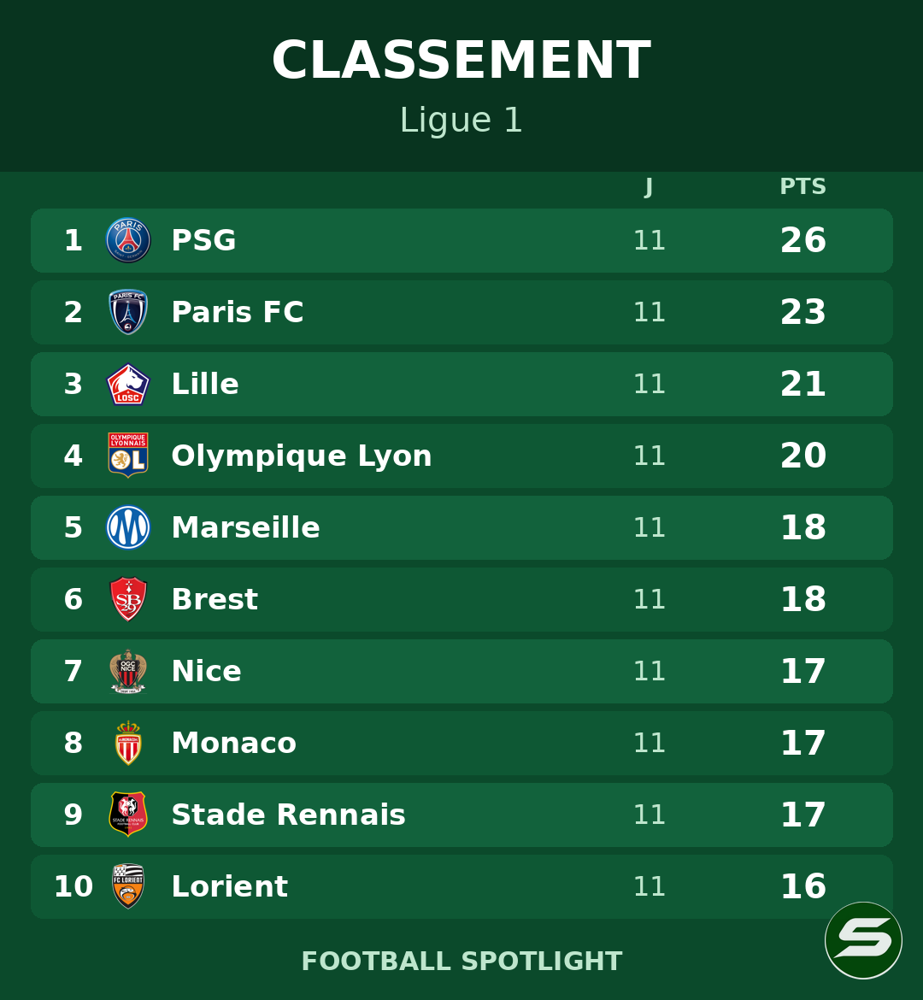
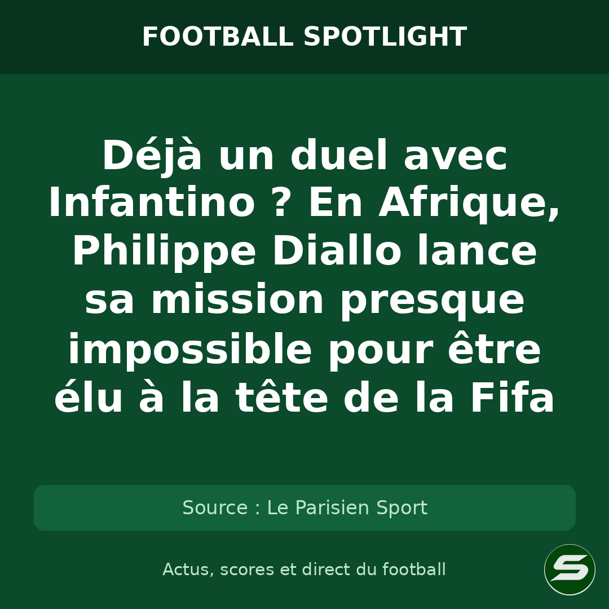
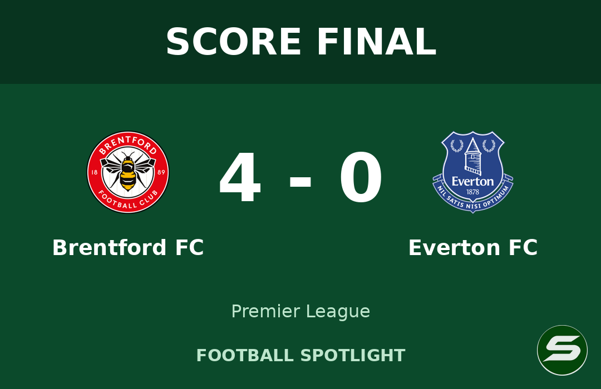
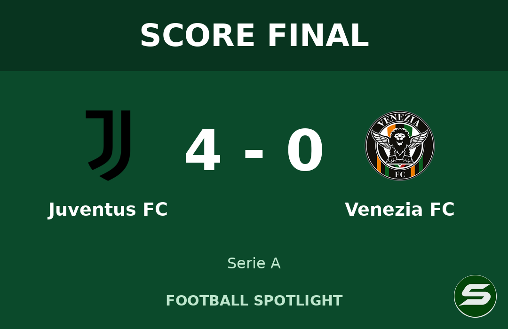
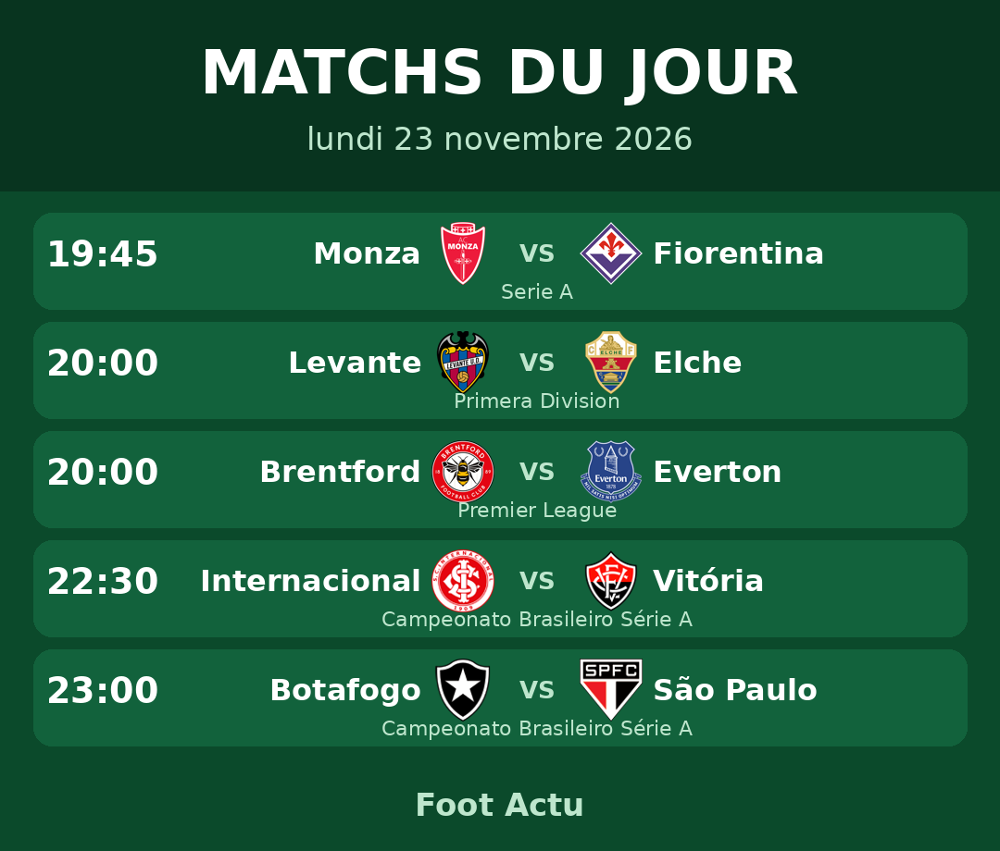

2026-11-24 00:13 UTCFormule 1 : Max Verstappen partira en pole position au Grand Prix de Las Vegas après la pénalité de Kimi Antonelli
🚨 Formule 1 : Max Verstappen partira en pole position au Grand Prix de Las Vegas après la pénalité de Kimi Antonelli
📰 Source : Le Parisien Sport
#Football #Actu
 Lire la suite →2026-11-24 00:13 UTC
Lire la suite →2026-11-24 00:13 UTC« Nous sommes comme ses soldats » : Antoine Dupont, génie du rugby devenu capitaine incontesté du XV de France
🚨 « Nous sommes comme ses soldats » : Antoine Dupont, génie du rugby devenu capitaine incontesté du XV de France
📰 Source : Le Parisien Sport
#Football #Actu
 Lire la suite →2026-11-24 00:12 UTC
Lire la suite →2026-11-24 00:12 UTCClassement Serie A
📊 Classement Serie A (top 10)
🥇 Lazio – 32 pts
🥈 Roma – 30 pts
🥉 Inter – 29 pts
4. Milan – 27 pts
5. Como 1907 – 26 pts
6. Juventus – 21 pts
7. Frosinone – 20 pts
8. Napoli – 18 pts
9. Bologna – 18 pts
10. Genoa – 16 pts
📌 Lazio est en tête avec 32 points en 12 matchs, 2 point(s) d'avance sur Roma.
#Football
 2026-11-24 00:12 UTC
2026-11-24 00:12 UTCClassement Primera Division
📊 Classement Primera Division (top 10)
🥇 Barça – 36 pts
🥈 Real Madrid – 33 pts
🥉 Atleti – 31 pts
4. Real Betis – 27 pts
5. Real Sociedad – 22 pts
6. Sevilla FC – 19 pts
7. Santander – 17 pts
8. Athletic – 16 pts
9. Alavés – 16 pts
10. Villarreal – 15 pts
📌 Barça est en tête avec 36 points en 13 matchs, 3 point(s) d'avance sur Real Madrid.
#Football

2026-11-24 00:12 UTCClassement Premier League
📊 Classement Premier League (top 10)
🥇 Arsenal – 28 pts
🥈 Brighton Hove – 22 pts
🥉 Man City – 22 pts
4. Liverpool – 21 pts
5. Bournemouth – 18 pts
6. Brentford – 17 pts
7. Leeds United – 17 pts
8. Chelsea – 16 pts
9. Everton – 16 pts
10. Tottenham – 15 pts
📌 Arsenal est en tête avec 28 points en 11 matchs, 6 point(s) d'avance sur Brighton Hove.
#Football

2026-11-24 00:12 UTCClassement Ligue 1
📊 Classement Ligue 1 (top 10)
🥇 PSG – 26 pts
🥈 Paris FC – 23 pts
🥉 Lille – 21 pts
4. Olympique Lyon – 20 pts
5. Marseille – 18 pts
6. Brest – 18 pts
7. Nice – 17 pts
8. Monaco – 17 pts
9. Stade Rennais – 17 pts
10. Lorient – 16 pts
📌 PSG est en tête avec 26 points en 11 matchs, 3 point(s) d'avance sur Paris FC.
#Football

2026-11-24 00:04 UTCDéjà un duel avec Infantino ? En Afrique, Philippe Diallo lance sa mission presque impossible pour être élu à la tête de la Fifa
🚨 Déjà un duel avec Infantino ? En Afrique, Philippe Diallo lance sa mission presque impossible pour être élu à la tête de la Fifa
📰 Source : Le Parisien Sport
#Football #Actu

Lire la suite →2026-11-24 00:04 UTC« On n’a vu que lui » : de Cergy en amateurs à la Ligue 1 avec Nice, la folle ascension de Djibril Coulibaly
🚨 « On n’a vu que lui » : de Cergy en amateurs à la Ligue 1 avec Nice, la folle ascension de Djibril Coulibaly
📰 Source : Le Parisien Sport
#Football #Actu
Lire la suite →2026-11-24 00:04 UTCBrentford 4 - 0 Everton
⏱️ TERMINÉ
⚽ BRENTFORD 4 - 0 EVERTON
✅ Victoire de Brentford
🏆 Premier League · Journée 11
#Football #PremierLeague

2026-11-24 00:04 UTCLevante 1 - 1 Elche
⏱️ TERMINÉ
⚽ LEVANTE 1 - 1 ELCHE
🤝 Match nul
🏆 Primera Division · Journée 13
#Football #PrimeraDivision
 2026-11-24 00:04 UTC
2026-11-24 00:04 UTCMonza 3 - 0 Fiorentina
⏱️ TERMINÉ
⚽ MONZA 3 - 0 FIORENTINA
✅ Victoire de Monza
🏆 Serie A · Journée 12
#Football #SerieA
 2026-11-24 00:04 UTC
2026-11-24 00:04 UTCMatchs du mardi 24 novembre 2026
📅 MATCHS DU JOUR – mardi 24 novembre 2026
🕒 00:00 – Santos vs Grêmio (Campeonato Brasileiro Série A)
🕒 17:45 – Galatasaray vs Aston Villa (UEFA Champions League)
🕒 17:45 – Bodø/Glimt vs LASK (UEFA Champions League)
🕒 19:45 – Charlton vs Lincoln City (Championship)
🕒 19:45 – Middlesbrough vs Swansea (Championship)
🕒 19:45 – Norwich vs QPR (Championship)
🕒 19:45 – Sheffield Utd vs Southampton (Championship)
🕒 19:45 – Cardiff vs Preston NE (Championship)
🕒 19:45 – Bristol City vs Wrexham (Championship)
🕒 19:45 – Portsmouth vs West Ham (Championship)
🕒 20:00 – Sl. Bratislava vs Real Betis (UEFA Champions League)
🕒 20:00 – Real Madrid vs PSV (UEFA Champions League)
🕒 20:00 – Como 1907 vs PAE AEK (UEFA Champions League)
🕒 20:00 – Arsenal vs Dortmund (UEFA Champions League)
🕒 20:00 – Wolverhampton vs Derby County (Championship)
🔥 Bon match à tous !
#Football
 2026-11-23 23:38 UTC
2026-11-23 23:38 UTCJuventus 4 - 0 Venezia FC
⏱️ TERMINÉ
⚽ JUVENTUS 4 - 0 VENEZIA FC
✅ Victoire de Juventus
🏆 Serie A · Journée 12
#Football #SerieA

2026-11-23 23:38 UTCTwente 2 - 1 Willem II
⏱️ TERMINÉ
⚽ TWENTE 2 - 1 WILLEM II
✅ Victoire de Twente
🏆 Eredivisie · Journée 13
#Football #Eredivisie
 2026-11-23 23:38 UTC
2026-11-23 23:38 UTCChapecoense 1 - 2 Cruzeiro
⏱️ TERMINÉ
⚽ CHAPECOENSE 1 - 2 CRUZEIRO
✅ Victoire de Cruzeiro
🏆 Campeonato Brasileiro Série A · Journée 36
#Football #CampeonatoBrasileiroSérieA
 2026-11-23 23:38 UTC
2026-11-23 23:38 UTCMatchs du lundi 23 novembre 2026
📅 MATCHS DU JOUR – lundi 23 novembre 2026
🕒 19:45 – Monza vs Fiorentina (Serie A)
🕒 20:00 – Levante vs Elche (Primera Division)
🕒 20:00 – Brentford vs Everton (Premier League)
🕒 22:30 – Internacional vs Vitória (Campeonato Brasileiro Série A)
🕒 23:00 – Botafogo vs São Paulo (Campeonato Brasileiro Série A)
🔥 Bon match à tous !
#Football
